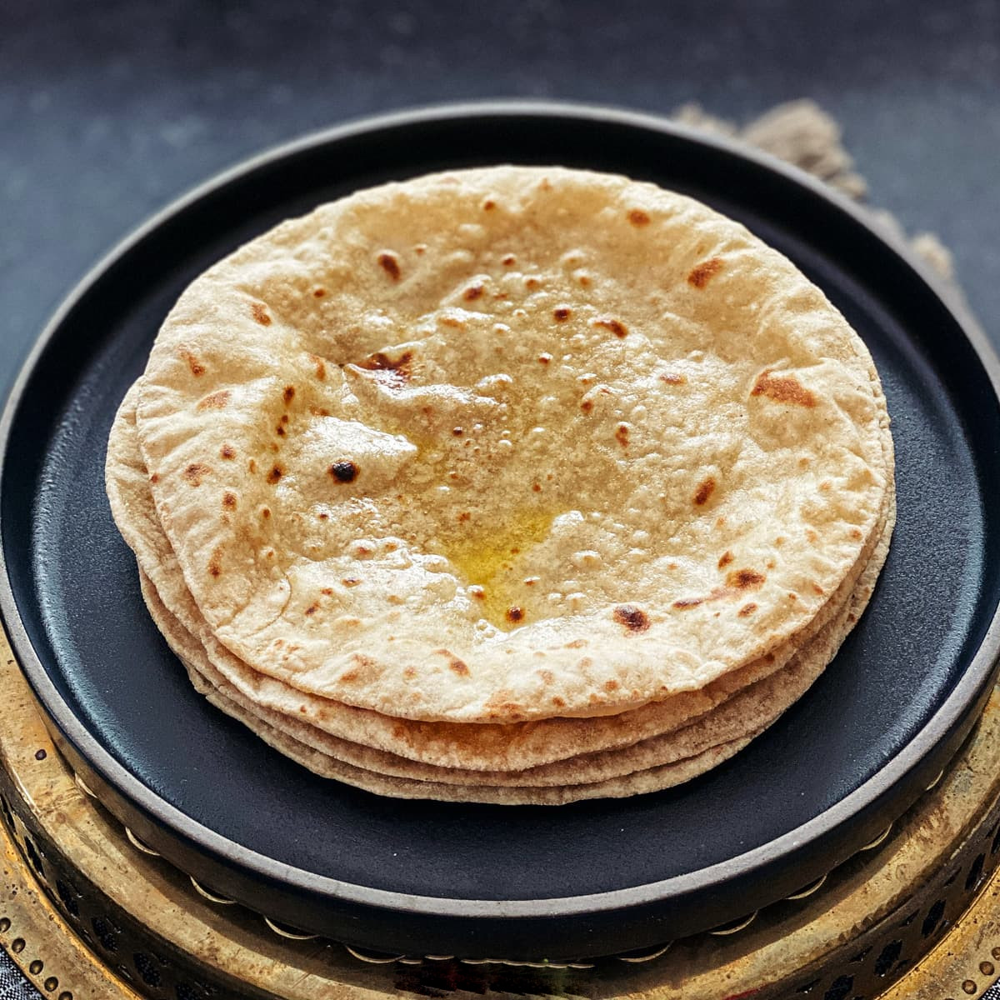

Home
Indian Chapati

Description
The indian chapati is type of bread that commonly eaten throughout india. it is primarily made from flour of wheat and is eaten with variety fo indian dishes.
Ingredients
You only need few ingredients like:
-
1 cup whole wheat flour
-
1 cup all-purpose flour
-
1 teaspoon salt
-
¾ cup hot water or as needed
-
2 tablespoons olive oil or vegetable oil
Steps to make Indian chapati
Making chapati is easy first you need to:
- Gather all ingredients
- Mix whole wheat flour, all-purpose flour, and salt in a large bowl. Use a wooden spoon to stir in water and oil. Mix until a soft, elastic dough forms and add more water, if needed.
- Knead dough on a lightly floured surface until smooth.
- Divide dough into 10 equal portions, or less if you want larger chapatis. Roll each piece into a ball and let rest for a few minutes.
- Heat a lightly greased skillet over medium heat. Use a rolling pin to roll dough balls out on a lightly floured surface until very thin.
- When the skillet starts to smoke, place a chapati in it. Cook until bottom has brown spots, about 30 seconds, then flip and cook 30 seconds more.
- Repeat to cook remaining chapatis.